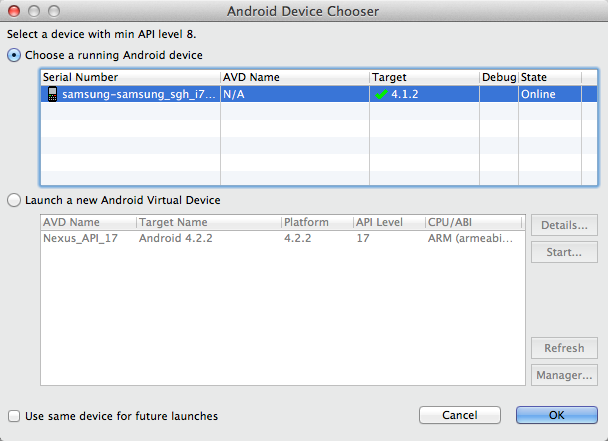

Android Studio - Quick Start to Brightcove Player SDK for Android
In this quick start you will create an app in Android Studio which plays a single video, a video from a Brightcove Video Cloud account, and videos from a Brightcove Video Cloud playlist, all using the Brightcove Player SDK for Android.
After completing this Quick Start you should be able to:
- Create a project and add the Brightcove Player SDK for Android using Gradle.
- Alter the layout to include a
BrightcoveVideoView. - Add to the
onCreate()method to play videos from different sources.
Audience
Developers who use Android Studio for development and are interested in using the Brightcove Player SDK for Android in an Android app.
Prerequisites
- A minimal knowledge of Java and Android app development.
Get ready
Get ready for development by installing Android Studio
- Download the Android Studio application.
- Follow the directions on the pages to install the application.
Create a project
Create a project in Android Studio and then link to the player SDK using Gradle.
Create a project in Android Studio
- Open Android Studio. If this is your first time opening Android Studio, select New Project. If you are seeing the menus, select File > New > Android Application Project.
- Supply values for the Application Name, Module Name, Package Name and Project location. In this quick start the values shown below are used:
- Click Next.
- Be sure Blank Activity is selected and click Next.
- Accept the defaults of creating a Blank Activity and click Next.
- Accept the defaults for the activity details (see following screenshot) and click Finish.

- Android Studio will work for awhile and eventually display the initial state of the project.


Utilize Gradle to link to the Brightcove Player SDK for Android
- Open the
app/src/build.gradlefile that is located in theappfolder. Be sure you get the firstbuild.gradlethat appears in the file structure, as there are two. - At the bottom of the file, add the
repositoriessection and alter thedependenciessection as shown here:

Code the application
Task: Code the application layout and logic
In this task, you will write the code to layout the app, build the video list, and play the videos
Define the app's layout
- Open the file
app/src/main/res/layout/activity_main.xml. - Click Text at the bottom of the file's tab to see the raw XML.

- Remove the existing
TextViewsection and add aBrightcoveVideoViewsection so the resulting XML appears as follows. Note for later use theidof the view is namedbrightcove_video_view.
Enable the app to use the Internet
- Open the file
app/src/main/AndroidManifest.xml. - Just after the
<application>code block, but above the END</manifest>tag, insert the following to enable Internet access.
Import the appropriate classes
- If it is not already open (which it should be), open the file
app/src/main/java/com.brightcove.playvideos/MainActivity.java. - Just below the package name, add the following to the currently imported classes.
Of course, as is standard Android Studio functionality, as you use classes they will automatically be imported. It is suggested you take advantage of this functionality, and not complete the next step to do the imports now.
- Connect an Android device, if you have one, to your computer.
- You may choose one of several ways to run the app:
- From the top menu select Run > Run 'app'
- Click the run icon in the toolbar.

- Right click on the project and select Run 'PlayVideos - App Eng...'
- As show in the following screenshot, you can choose your device or the simulator:
 - Click OK.
- You will now see just a blank, black rectangle representing the empty BrightcoveVideoView.
- In
MainActivity.java, locate the functiononCreate. - Below any existing code in the function, create an instance of
BrightcoveVideoViewand associate it with the layout using the following: - Now add the following to lines of code to add a video to the view and play it.
- Run or debug the application to see the video playing.
Run the application
You are now going to run the application. This is not so you will see any video playing, but it will force a Gradle build. Once this is done, the app will be aware of the Brightcove Player SDK for Android and you will get typing help when entering Brightcove class names.
Create the BrightcoveVideoView and play a video
Add controls to the player
- Add a blank line just after the instantiation of the
BrightcoveVideoViewand before adding the video. - In this position add the following code to add controls to the player.
- Be sure your onCreate method appears as follows:
- Run the application and you will see the video playing, now with the controls visible. If you don't see the controls, tap the screen and they will appear.
Get and play video
Task: Retrieve a video from Video Cloud and then play the video
In this task, you will use the Catalog class to retrieve a single video from the Video Cloud server, then play it. The Catalog class provides asynchronous methods for retrieving information about videos and playlists from Brightcove's Media API services.
Remove unneeded code
- Some code from the previous app is no longer needed. Remove the two lines of code in the
onCreatemethod that add and start the video. - Confirm your
onCreatemethod appears as follows:
Retrieve a video from the Catalog
- From Video Cloud Studio navigate to Home > Account Settings > API Management and copy a token that has the URL Access option.
- In your code below the creation of the
BrightcoveVideoViewinstance, create an instance of theCatalogusing the following and substituting your token: - From the Video Cloud Studio's Media module select a video then from the right-hand side of the screen copy the Video ID.
- In your code below the two lines that deal with the MediaController, use the Catalog's
findVideoByIDmethod using your video ID and aVideoListenerfor the callback. - In the
onVideomethod, add the video tobrightcoveVideoView, then start the video. - In the
onErrormethod throw the error string. - Check to be sure your onCreate method appears as follows:
- Run the app to confirm the video plays.
Note: If you are not familiar with tokens please see Managing Media API Tokens.
The VideoListener identifies objects that expect to receive a Video object from an asynchronous operation. On a successful operation, an onVideo() method will be called. If there is an error in the operation, an onError() method will be called. Android Studio inserted the signatures of the two needed methods.
Get and play playlist
Task: Retrieve a playlist from Video Cloud and ensure it plays correctly
In this task, you will use the Catalog class to retrieve a playlist from the Video Cloud server, then play the videos in the playlist. The Catalog class provides asynchronous methods for retrieving information about videos and playlists from Brightcove's Media API services.
Remove unneeded code
- Some code from the previous app is no longer needed. Remove the call to the Catalog's
findVideoByIDmethod, and the associatedVideoListeneranonymous callback function.
Retrieve a playlist from the Catalog
- The existing catalog instance will work for retrieving a playlist, so no changes are necessary to this line of code:
- In Video Cloud Studio's Media module click the All Playlists option.
- Double-click one of the playlists, and just ABOVE the list of videos in the playlist copy the Playlist ID.
- In your code below the two lines that deal with the MediaController, use the Catalog's
findPlaylistByIDmethod using your playlist ID and aPlaylistListenerfor the callback. - In the
onPlaylistmethod, retrieve the videos from the playlist, add all of the videos tobrightcoveVideoView, then start the first video. - In the
onErrormethod throw the error string. - Check to be sure your onCreate method appears as follows:
- Run the app to confirm multiple videos from the playlist play.
The PlaylistListener identifies objects that expect to receive a Playlist object from an asynchronous operation. On a successful operation, an onPlaylist() method will be called. If there is an error in the operation, an onError() method will be called. Android Studio inserted the signatures of the two needed methods.
You're done! Thanks for working through the Android SDK Quick Start.